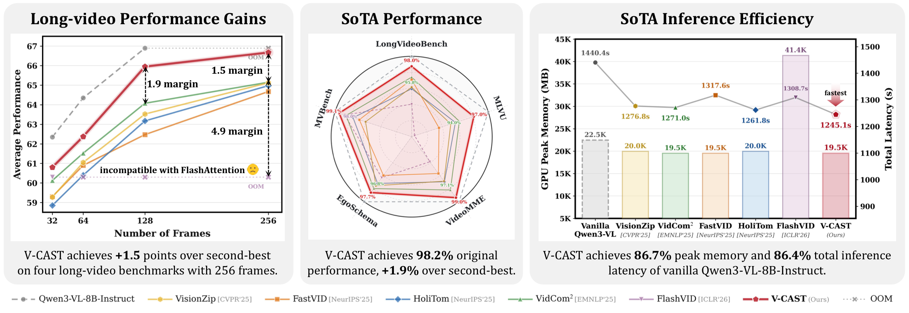
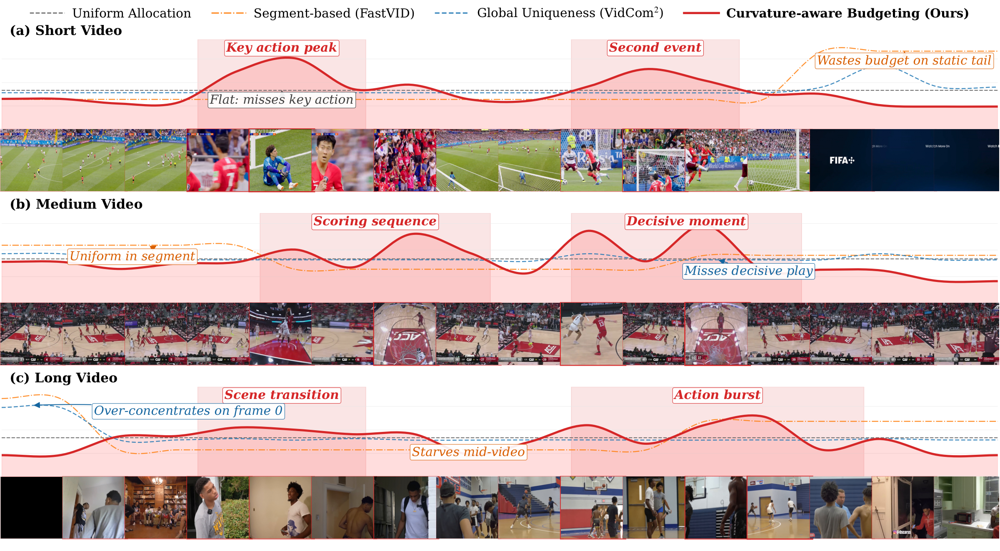
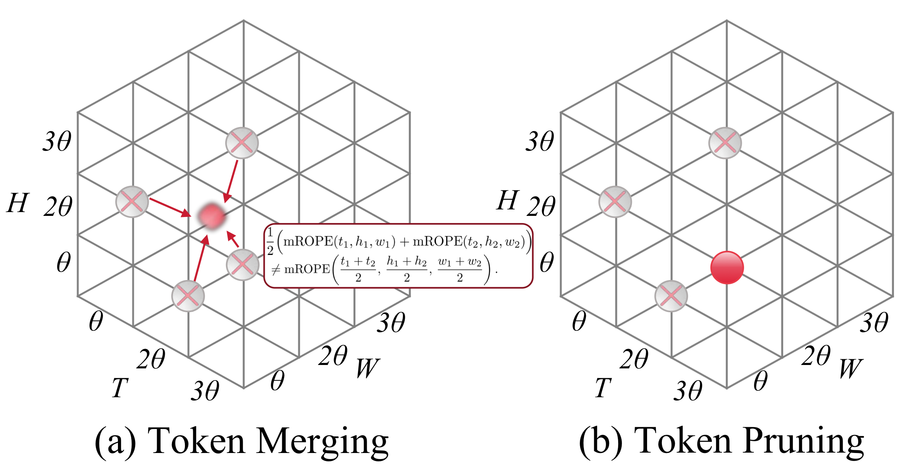
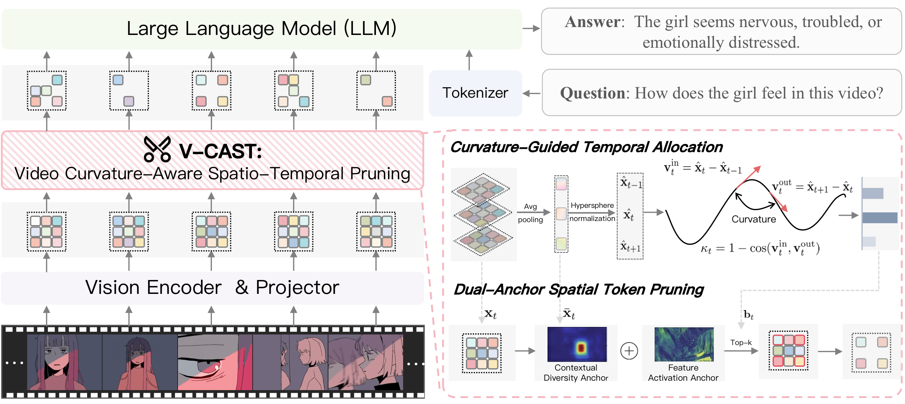
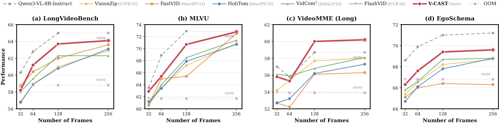
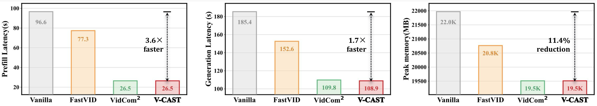
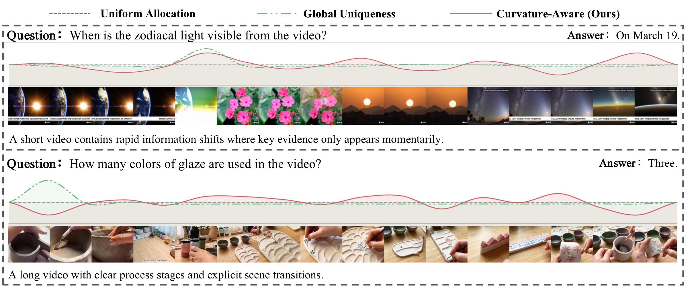
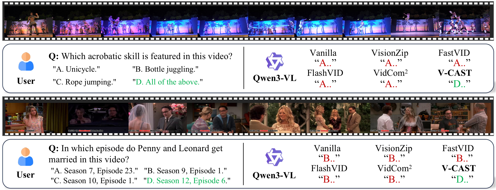

Highlight of V-CAST. Compared to existing token compression methods, V-CAST yields +1.5 long-video gains, achieves 98.2% original performance with a +1.9% margin, and reduces peak memory and latency to 86.7% and 86.4% of vanilla Qwen3-VL-8B-Instruct.
Contributions
(1) Spatio-temporal Coverage Rethinking: We revisit visual token compression for VideoLLMs under tight token budgets and identify spatio-temporal information coverage as the core bottleneck, together with two failure modes in prior pipelines: discontinuous coverage and misaligned spatio-temporal information.
(2) Video Curvature-Aware Spatio-Temporal Pruning: We propose V-CAST, a plug-and-play token pruning approach that couples per-frame token budgeting with content-driven token selection from the perspective of video spatio-temporal curvature, while preserving on-grid coordinates.
(3) State-of-the-Art Performance and Efficiency: Experiments on long-video benchmarks show that V-CAST achieves the best accuracy-efficiency trade-off on Qwen3-VL-8B-Instruct, Qwen3-VL-32B-Instruct, Qwen3-VL-30B-A3B-Instruct, and LLaVA-OV/Video-7B, while reducing peak memory and end-to-end latency.
Motivation

Existing token compression methods often underperform because they allocate budgets in ways that fail to preserve critical temporal turns and informative spatial evidence. This analysis motivates V-CAST to prioritize spatio-temporal coverage instead of relying on uniform or myopic compression under tight budgets.
| Spatial Selection | MVBench | LongVideo Bench |
VideoMME | |||
|---|---|---|---|---|---|---|
| All | S | M | L | |||
| Qwen3-VL-8B-Instruct | 68.6 | 60.3 | 64.5 | 76.0 | 60.4 | 57.0 |
| (a) Token Merging | ||||||
| HoliTom [NeurIPS'25] | 63.0 | 56.8 | 59.7 | 71.4 | 54.6 | 53.1 |
| AvgPool (2x2) | 65.4 | 58.6 | 60.5 | 72.3 | 56.7 | 52.4 |
| (b) Token Pruning | ||||||
| Random (2x2) | 66.9 | 57.8 | 61.9 | 73.6 | 58.7 | 53.4 |
| First (2x2) | 67.7 | 57.7 | 61.1 | 72.2 | 56.2 | 55.0 |

Misaligned spatio-temporal information from token merging. Token merging drifts off the discrete (t,h,w) grid and weakens MRoPE bindings, while token pruning preserves on-grid coordinates.
Method
V-CAST formulates token pruning for VideoLLMs as an optimal semantic-trajectory approximation problem under a fixed budget. It applies Curvature-Guided Temporal Allocation to assign per-frame budgets by tracking semantic transitions, and then performs Dual-Anchor Spatial Token Selection to retain diverse and salient tokens while preserving original on-grid coordinates.

Overall framework of V-CAST. The method first allocates temporal budget with curvature cues, then performs dual-anchor spatial token pruning using contextual diversity and feature activation anchors.
Main Results
| Methods | MVBench | LongVideo Bench |
MLVU | VideoMME | Average | ||||
|---|---|---|---|---|---|---|---|---|---|
| Overall | Short | Medium | Long | Score | % | ||||
| Max Input Frames=64 | |||||||||
| Qwen3-VL-8B-Instruct | 69.2 | 62.8 | 68.9 | 66.9 | 78.8 | 66.2 | 55.8 | 67.0 | 100.0 |
| Retention Ratio=25% | |||||||||
| VisionZip [CVPR'25] | 64.8 | 58.9 | 63.4 | 63.1 | 73.7 | 60.3 | 55.4 | 62.6 | 93.4 |
| VidCom2 [EMNLP'25] | 67.5 | 59.6 | 64.0 | 64.9 | 75.4 | 63.4 | 55.9 | 64.0 | 95.5 |
| FastVID [NeurIPS'25] | 66.8 | 60.4 | 65.0 | 62.3 | 73.9 | 60.7 | 52.2 | 63.6 | 94.9 |
| HoliTom [NeurIPS'25] | 64.8 | 58.9 | 63.4 | 62.7 | 74.4 | 60.6 | 53.2 | 62.5 | 93.3 |
| FlashVID [ICLR'26] | OOM | OOM | OOM | OOM | OOM | OOM | OOM | - | - |
| V-CAST [Ours] | 68.4 | 61.2 | 65.4 | 65.1 | 76.8 | 63.2 | 55.3 | 65.0 | 97.0 |
| Retention Ratio=15% | |||||||||
| VisionZip [CVPR'25] | 62.0 | 57.7 | 61.4 | 60.4 | 70.3 | 58.4 | 52.6 | 60.4 | 90.1 |
| VidCom2 [EMNLP'25] | 64.3 | 57.4 | 60.3 | 62.9 | 72.6 | 61.3 | 54.7 | 61.2 | 91.3 |
| FastVID [NeurIPS'25] | 64.9 | 59.7 | 63.3 | 60.5 | 72.2 | 57.2 | 52.1 | 62.1 | 92.7 |
| HoliTom [NeurIPS'25] | 62.7 | 58.3 | 61.8 | 60.9 | 72.3 | 58.2 | 52.2 | 60.9 | 90.9 |
| FlashVID [ICLR'26] | OOM | OOM | OOM | OOM | OOM | OOM | OOM | - | - |
| V-CAST [Ours] | 66.3 | 59.6 | 64.4 | 63.9 | 76.3 | 61.4 | 53.8 | 63.6 | 94.9 |
| Max Input Frames=32 | |||||||||
| Qwen3-VL-8B-Instruct | 68.6 | 60.3 | 63.5 | 64.5 | 76.0 | 60.4 | 57.0 | 64.2 | 100.0 |
| Retention Ratio=25% | |||||||||
| VisionZip [CVPR'25] | 62.2 | 56.7 | 60.8 | 60.1 | 69.6 | 56.7 | 54.2 | 60.0 | 93.5 |
| VidCom2 [EMNLP'25] | 67.0 | 58.0 | 60.6 | 62.4 | 72.1 | 59.1 | 56.1 | 62.0 | 96.6 |
| FastVID [NeurIPS'25] | 67.3 | 58.7 | 60.7 | 60.5 | 72.0 | 56.8 | 52.7 | 61.8 | 96.3 |
| HoliTom [NeurIPS'25] | 63.0 | 56.8 | 61.2 | 59.7 | 71.4 | 54.6 | 53.1 | 60.2 | 93.8 |
| FlashVID [ICLR'26] | 67.5 | 58.8 | 61.7 | 62.3 | 74.4 | 58.7 | 53.9 | 62.6 | 97.5 |
| V-CAST [Ours] | 67.9 | 58.2 | 63.5 | 63.5 | 74.4 | 60.2 | 55.8 | 63.3 | 98.6 |
| Retention Ratio=15% | |||||||||
| VisionZip [CVPR'25] | 60.1 | 56.2 | 60.0 | 58.2 | 66.9 | 54.9 | 52.9 | 58.6 | 91.3 |
| VidCom2 [EMNLP'25] | 64.2 | 56.0 | 57.7 | 59.6 | 68.9 | 56.7 | 53.3 | 59.4 | 92.5 |
| FastVID [NeurIPS'25] | 66.1 | 57.1 | 59.0 | 58.3 | 69.6 | 54.3 | 51.1 | 60.1 | 93.6 |
| HoliTom [NeurIPS'25] | 60.0 | 55.8 | 59.6 | 58.3 | 68.9 | 54.7 | 51.7 | 58.4 | 91.0 |
| FlashVID [ICLR'26] | 66.5 | 57.8 | 60.0 | 61.4 | 72.4 | 57.6 | 54.1 | 61.4 | 95.6 |
| V-CAST [Ours] | 66.2 | 57.7 | 60.1 | 62.0 | 71.9 | 58.3 | 55.9 | 61.5 | 95.8 |
| Methods | MVBench | LongVideo Bench |
MLVU | VideoMME | Average | ||||
|---|---|---|---|---|---|---|---|---|---|
| Overall | Short | Medium | Long | Score | % | ||||
| Qwen3-VL-32B-Instruct | 73.2 | 62.4 | 66.1 | 69.3 | 78.3 | 67.1 | 62.4 | 67.8 | 100.0 |
| Retention Ratio=25% | |||||||||
| VisionZip [CVPR'25] | 62.9 | 60.0 | 62.2 | 64.8 | 72.8 | 63.1 | 58.6 | 62.5 | 92.2 |
| VidCom2 [EMNLP'25] | 70.2 | 60.4 | 64.9 | 67.0 | 75.6 | 64.3 | 61.2 | 65.6 | 96.8 |
| FastVID [NeurIPS'25] | 71.0 | 60.9 | 64.5 | 65.1 | 75.1 | 62.6 | 57.7 | 65.4 | 96.5 |
| HoliTom [NeurIPS'25] | 62.3 | 60.2 | 63.2 | 64.9 | 74.2 | 61.2 | 59.1 | 62.6 | 92.3 |
| FlashVID [ICLR'26] | OOM | OOM | OOM | OOM | OOM | OOM | OOM | - | - |
| V-CAST [Ours] | 71.8 | 61.5 | 64.7 | 68.1 | 77.7 | 65.9 | 60.8 | 66.5 | 98.1 |
| Methods | MVBench | LongVideo Bench |
MLVU | VideoMME | Average Score | |||
|---|---|---|---|---|---|---|---|---|
| Overall | Short | Medium | Long | |||||
| Qwen3-VL-30B-A3B-Instruct | OOM | OOM | OOM | OOM | OOM | OOM | OOM | - |
| Retention Ratio=25% | ||||||||
| VisionZip [CVPR'25] | 61.3 | 62.4 | 64.1 | 62.7 | 70.7 | 61.3 | 56.0 | 62.6 |
| VidCom2 [EMNLP'25] | 69.7 | 65.5 | 68.5 | 68.1 | 79.1 | 68.0 | 58.9 | 68.0 |
| FastVID [NeurIPS'25] | 68.2 | 60.7 | 64.8 | 62.4 | 70.3 | 61.6 | 55.2 | 64.0 |
| HoliTom [NeurIPS'25] | 66.0 | 63.9 | 64.7 | 64.6 | 73.6 | 63.9 | 56.2 | 64.8 |
| FlashVID [ICLR'26] | OOM | OOM | OOM | OOM | OOM | OOM | OOM | - |
| V-CAST [Ours] | 69.2 | 66.6 | 68.2 | 68.2 | 78.9 | 65.9 | 59.8 | 68.1 |

Consistent gains with more frames on Qwen3-VL-8B-Instruct. Performance trends on LongVideoBench, MLVU, VideoMME (Long), and EgoSchema as input frames increase. V-CAST improves accuracy and scales to longer inputs, while some baselines show limited gains or OOM failures at larger frame counts.
| Methods | MVBench | LongVideo Bench |
MLVU | VideoMME | Average | ||||
|---|---|---|---|---|---|---|---|---|---|
| Overall | Short | Medium | Long | Score | % | ||||
| LLaVA-OV-7B | 58.3 | 56.6 | 63.1 | 58.4 | 69.9 | 56.7 | 48.8 | 59.1 | 100.0 |
| Retention Ratio=25% | |||||||||
| FastV [ECCV'24] | 55.5 | 53.3 | 59.6 | 55.3 | 65.0 | 53.8 | 47.0 | 55.9 | 94.6 |
| PDrop [CVPR'25] | 55.3 | 51.3 | 57.1 | 55.5 | 64.7 | 53.1 | 48.7 | 54.8 | 92.7 |
| SparseVLM [ICML'25] | 56.4 | 53.9 | 60.7 | 57.3 | 68.4 | 55.2 | 48.1 | 57.1 | 96.6 |
| VisionZip [CVPR'25] | 56.9 | 56.0 | 62.9 | 58.0 | 68.9 | 57.4 | 47.6 | 58.5 | 99.0 |
| PruneVid [ACL'25] | 55.7 | 55.1 | 63.4 | 57.0 | 68.8 | 54.4 | 47.7 | 57.8 | 97.8 |
| FrameFusion [ICCV'25] | 56.0 | 54.8 | 61.7 | 57.5 | 68.2 | 55.7 | 48.6 | 57.5 | 97.3 |
| FastVID [NeurIPS'25] | 56.5 | 56.3 | 60.9 | 58.3 | 69.4 | 58.2 | 47.2 | 58.0 | 98.1 |
| VidCom2 [EMNLP'25] | 57.0 | 55.4 | 62.8 | 58.4 | 69.3 | 56.3 | 49.4 | 58.4 | 98.8 |
| V-CAST [Ours] | 57.4 | 56.4 | 62.9 | 58.6 | 70.7 | 56.0 | 49.1 | 58.8 | 99.5 |
| Methods | MVBench | LongVideo Bench |
MLVU | VideoMME | Average | ||||
|---|---|---|---|---|---|---|---|---|---|
| Overall | Short | Medium | Long | Score | % | ||||
| LLaVA-Video-7B | 60.4 | 58.9 | 67.3 | 64.4 | 77.3 | 62.4 | 53.4 | 62.8 | 100.0 |
| Retention Ratio=25% | |||||||||
| FastV [ECCV'24] | 52.1 | 54.8 | 57.8 | 58.6 | 68.7 | 58.4 | 48.7 | 55.8 | 88.9 |
| SparseVLM [ICML'25] | 55.4 | 54.2 | 58.9 | 60.1 | 71.1 | 59.1 | 50.1 | 57.2 | 91.1 |
| VisionZip [CVPR'25] | 57.9 | 56.3 | 62.6 | 62.5 | 73.6 | 62.3 | 51.9 | 59.8 | 95.2 |
| HoliTom [NeurIPS'25] | 58.4 | 57.1 | 60.5 | 63.0 | 74.6 | 62.3 | 52.1 | 59.8 | 95.2 |
| VidCom2 [EMNLP'25] | 57.0 | 57.1 | 58.7 | 61.7 | 73.0 | 61.7 | 50.0 | 58.6 | 93.4 |
| V-CAST [Ours] | 58.0 | 57.3 | 61.6 | 62.7 | 74.0 | 61.2 | 52.4 | 59.9 | 95.4 |
R=25% with max input frames = 32. Lower is better for latency and memory, while higher is better for throughput and performance.
| Methods | Prefilling | LLM Generation | Total Latency | GPU Peak | Throughput | Performance |
|---|---|---|---|---|---|---|
| Latency (s) ↓ | Latency (s) ↓ | Latency (s) ↓ | Memory (MB) ↓ | item/s ↑ | Score ↑ | |
| Qwen3-VL-8B-Instruct | 243.6 | 280.9 | 1440.4 | 22478.0 | 1.87 | 64.5 |
| Random | 116.9 | 147.3 | 1271.9 | 19547.5 | 2.12 | 61.5 |
| VisionZip [CVPR'25] | 155.6 | 190.5 | 1276.8 | 19974.7 | 2.11 | 60.1 |
| VidCom2 [EMNLP'25] | 119.0 | 150.2 | 1271.0 | 19547.5 | 2.12 | 62.4 |
| FastVID [NeurIPS'25] | 120.6 | 153.6 | 1317.6 | 19547.5 | 2.05 | 60.5 |
| HoliTom [NeurIPS'25] | 134.3 | 160.8 | 1261.8 | 19974.7 | 2.14 | 59.7 |
| FlashVID [ICLR'26] | 146.6 | 175.0 | 1308.7 | 41363.6 | 2.06 | 62.3 |
| V-CAST [Ours] | 118.8 | 149.9 | 1245.1 | 19547.5 | 2.17 | 63.5 |

Efficiency comparison on LLaVA-OneVision-7B. We compare Vanilla, FastVID, VidCom2, and V-CAST on Prefill Latency, Total Latency, and Peak Memory.
Analysis

Visualization of frame budget allocation. We compare Uniform allocation, Global Uniqueness, and Curvature-Aware allocation under R=25%. A higher curve indicates a larger per-frame token budget.
Qualitative Results

Qualitative comparison. V-CAST highlights task-critical moments and yields correct answers where baselines and even the vanilla model fail.
Citation
@misc{lin2026vcast,
title={V-CAST: Video Curvature-Aware Spatio-Temporal Pruning for Efficient Video Large Language Models},
author={Xinying Lin and Xuyang Liu and Yiyu Wang and Teng Ma and Wenqi Ren},
year={2026},
howpublished={\url{https://github.com/xinyouu/V-CAST}}
}